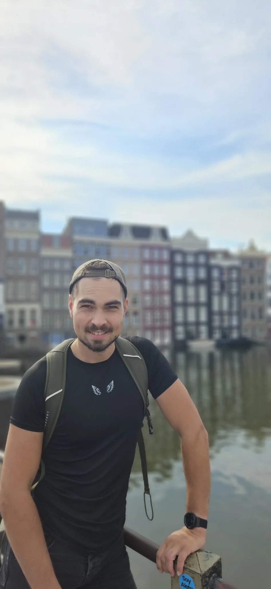

Kreativ. Neugierig. Echt.
Creative
Work.
Real Life.
That’s Me.
WebdesignE-LearningMedienproduktion& ein Leben dazwischen.
Same Person.
Different Passions.

NICK ACKERMANN · PORTFOLIO
MEINE ARBEITSWEISE
Eine Idee.
Alles aus einer Hand.
Ich begleite digitale Projekte ganzheitlich – von der ersten Idee über Design und Entwicklung bis zu Medieninhalten und laufender Weiterentwicklung. Persönlich, kreativ und technisch durchdacht.
Projekte und Arbeitsweise entdecken01 · Idee & Konzeption02 · Webdesign & Entwicklung03 · Content & Medien04 · Betreuung & Weiterentwicklung
ÜBER MICH
Nicht nur ein Job.
Viele Leidenschaften.
Ich bin Nick – kreativ, neugierig und offen für neue Ideen. Hier zeige ich, woran ich arbeite und was mich antreibt.
Mehr über michLET'S CONNECT
Let’s
Work Together.
Kreative Projekte. Neue Ideen.
Spannende Menschen.
Ich freue mich auf den Austausch!